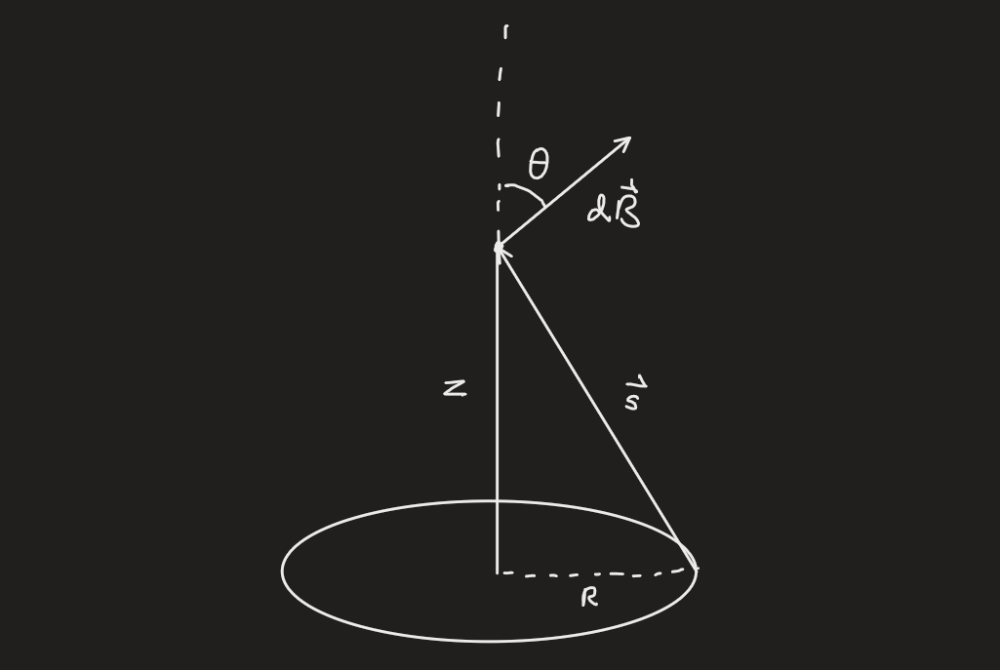
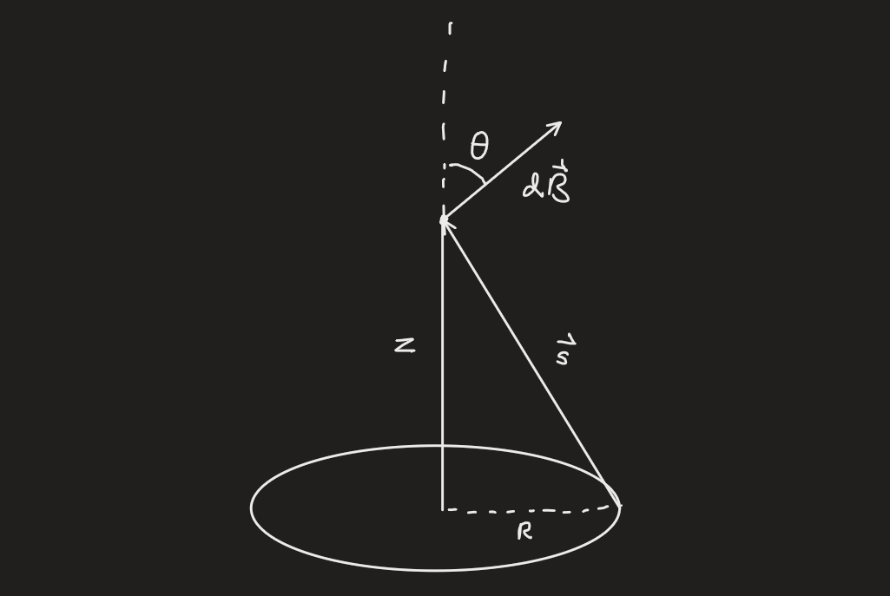
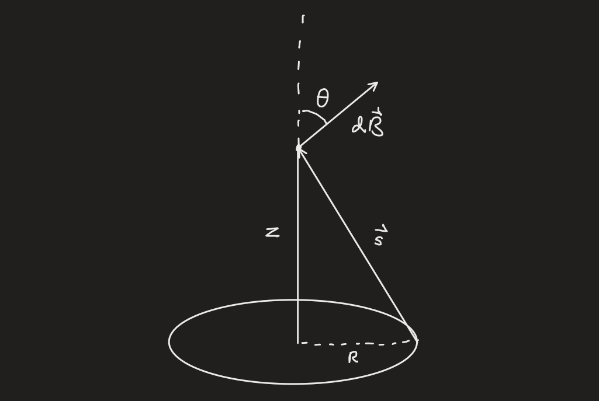

### Introduction
Charged objects exert forces on each other. We want to determine the force felt by a test charge $Q$ due to source charges $q_{1},\dots,q_n$.
For now we assume the test charge generates no fields. To set up this problem, we define three vectors $\vec{r},\space\vec{r}',\space\vec{s}$ that define the positions of the charged objects.
$\vec{r}$ represents the location of the test charge $Q$ and $\vec{r}'$ represents the location of the source charge $q$. If there are many sources, then $\vec{r}_i'$ represents the location of the $i$th source charge. $\vec{s}$ and $\vec{s}_i$ represent the distance from the source to the test.
> #### **Definition: Coulomb's Law:**
> Coulomb's Law is the action-at-a-distance principle that governs electric interactions. The electric force follows the inverse square law, similar to gravity.
> $$\vec{F}_i=\frac{1}{4\pi\epsilon_0}\frac{q_iQ}{s^2_i}\hat{s}_i$$
> This represents the force due to the $i$th source charge. The force can be attractive or repulsive, depending on the signs of the charges.
> $\epsilon_0$ is called the **permittivity of free space** and has value$$\epsilon_0=8.85\times10^{-12}\space\space C^2/N\cdot m^2$$
The laws of superposition state that the forces from individual sources can be summed to find the total force:
$$\vec{F}_{tot}=\sum\limits_i\vec{F}_i=\sum\limits_i\frac{1}{4\pi\epsilon_0}\frac{q_iQ}{s_i^2}\hat{s}_i=\frac{Q}{4\pi\epsilon_0}\sum\limits_i\frac{q_i}{s_i^2}\hat{s}_i$$
The inside of that equation represents a vector field.
>#### Definition: The Electric Field
>The electric field is the physical vector field generated by charged particles, in accordance to the following equation:
>$$\vec{E}(\vec{r})=\frac{1}{4\pi\epsilon_0}\sum\limits_{i}\frac{q_i}{s_i^2}\hat{s}_i$$
>The electric force can be expressed in terms of the electric field:
>$$\vec{F}=Q\vec{E}$$
>And of course the law of superposition holds for many test charges.
### Continuous Charge Distributions
The discrete sum that is the result of superposition can be extended to an integral in the case of continuous charge distributions.
>#### Line Charge:
>If we have a continuous line of charge with charge density $\lambda(\vec{r}')$ we can determine the electric field from the following integral:
>$$\vec{E}(\vec{r})=\frac{1}{4\pi\epsilon_0}\int_\ell\frac{\lambda(\vec{r}')}{s(\vec{r}')^2}\hat{s}(\vec{r}')d\ell'$$
>#### Surface Charge:
>If we have a continuous surface of charge with charge density $\sigma(\vec{r}')$ we can determine the electric field from the following integral:
>$$\vec{E}(\vec{r})=\frac{1}{4\pi\epsilon_0}\int_\mathcal{S}\frac{\sigma(\vec{r}')}{s(\vec{r}')^2}\hat{s}(\vec{r}')dA'$$
>#### Volume Charge:
>If we have a continuous line of charge with charge density $\rho(\vec{r}')$ we can determine the electric field from the following integral:
>$$\vec{E}(\vec{r})=\frac{1}{4\pi\epsilon_0}\int_\mathcal{V}\frac{\rho(\vec{r}')}{s(\vec{r}')^2}\hat{s}(\vec{r}')dV'$$
Gauss' Law
Consider a point charge $q$ at position $(0,0,0)$ in the $x,y,z$ coordinate system. We can calculate the Coulombic electric field:
$$\vec{E}(\vec{r})=\frac{1}{4\pi\epsilon_0}\frac{q}{r^2}\hat{r}$$ where $\hat{r}$ is the spherical radial coordinate.
Now consider a sphere of radius $R$ centered on the origin. Let's calculate the flux of the electric field through this surface:
$$\text{Flux}=\oint \vec{E}\cdot d\vec{A}=\frac{q}{4\pi\epsilon_0}\int_{0}^{2\pi}\int_{0}^{\pi}\frac{\hat{r}}{R^{2}}R^{2}\sin{\theta}d\theta d\phi=\frac{q}{\epsilon_0}$$
This is the essence of Gauss's law. The law of superposition allows us to add electric fields to get the total, meaning if we imagine multiple charges inside our fictitious sphere then the flux should just be the sum of the charges divided by $\epsilon_0$.
>#### Gauss's Law:
>Gauss's law states that the electric flux through a closed surface is equal to the total charge enclosed by the surface divided by the permittivity of free space.
>$$\oint\vec{E}\cdot d\vec{A}=\frac{Q_{enc}}{\epsilon_0}$$
>The differential form of this law is:
>$$\nabla\cdot\vec{E}=\frac{\rho}{\epsilon_0}$$
### Curl of the Electric Field
When discussing vector fields, we like to analyze their differential properties, one of which is the curl.
Suppose we choose arbitrary points $a$, $b$, and an arbitrary path between them. Let's examine the path integral of the electric field due to a point charge along this path:
$$\int_{a}^{b}\vec{E}\cdot d\vec{\ell}=\bigg[-\frac{q}{4\pi\epsilon_0}\frac{1}{r}\bigg]=\frac{q}{4\pi\epsilon_0}(r_a-r_b)$$
If we choose a closed path, that means $b=a$, and therefore the path integral is zero. By Stokes Theorem the path integral around a closed boundary is equal to the curl across that surface. We can extend this to infinity and get our final result:
$$\nabla\times\vec{E}=0$$
The Electric Potential
Recall that $\nabla\times\vec{E}$ is zero. From the theorems of vector calculus we can then define the electric field in terms of a scalar potential $V$.
>#### Definition: The Electric Potential
>The **electric potential** is the scalar function that represents the potential function of the electric field.
>$$\vec{E}=-\nabla V$$
>The law of superposition holds, so potentials can be summed to find the total potential. We can also define an integral form.
>$$V(\vec{r})=-\int_{0}^{r}\vec{E}\cdot d\vec{\ell}$$
Another quantity of interest is the potential difference between two points, $\Delta V=V(b)-V(a)$. We can work out this in terms of the electric field:
$$V(b)-V(a)=-\int_{0}^{b}\vec{E}\cdot d\vec{\ell}+\int_{0}^{a}\vec{E}\cdot d\vec{\ell}=-\int_{0}^{b}\vec{E}\cdot d\vec{\ell}-\int_{a}^{0}\vec{E}\cdot d\vec{\ell}=-\int_{a}^{b}\vec{E}\cdot d\vec{\ell}=\int_{a}^{b}\nabla V\cdot d\vec{\ell}$$
The potential is not the potential energy, though they are related.
>#### Definition: Equipotential
>An **equipotential** is a surface over which the potential is constant
The potential form of electrostatics has many advantages. Firstly, all info is encoded in a scalars, which are nicer to work with than vectors. We also know the following three statements are true, due to the curl being zero:
$$\frac{\partial\vec{E}_{x}}{\partial y}=\frac{\partial\vec{E}_{y}}{\partial x}\quad\quad\quad\quad\frac{\partial\vec{E}_{z}}{\partial y}=\frac{\partial\vec{E}_{y}}{\partial z}\quad\quad\quad\quad\frac{\partial\vec{E}_{x}}{\partial z}=\frac{\partial\vec{E}_{z}}{\partial x}$$
When calculating the potential from the electric field, we usually need a reference point where the potential is zero. This allows one term in the integral to vanish, otherwise the potential at a known point must be subtracted.
We can use the differential form of [[Gauss' Law#^e81ceb|Gauss's Law]], we can derive an equation for the potential:
$$\nabla\cdot\vec{E}=\nabla\cdot(-\nabla V)=-\nabla^2V=-\rho/\epsilon_0$$
$$\nabla^2V=\frac{\rho}{\epsilon_0}$$
This is an example of laplace's equation.
Now let's derive an expression for the potential in terms of the charges themselves.
The electric field for a charge $q$ at the origin is given by:
$$\vec{E}=\frac{1}{4\pi\epsilon_0}\frac{q}{r^2}\hat{r}$$
The line element in spherical coordinates is
$$d\vec{\ell}=dr\hat{r}+rd\theta\hat{\theta}+r\sin{\theta}d\phi\hat{\phi}$$
We set the reference point (where $V=0$) to be at $r=\infty$. We can then integrate from infinity to $r$ to find the potential a distance $r$ from the origin.
$$V(\vec{r})=-\int_{\infty}^{r}\vec{E}\cdot d\vec{\ell}=-\frac{q}{4\pi\epsilon_0}\int_{\infty}^{r}\frac{1}{r'^2}dr'=\frac{1}{4\pi\epsilon_0}\frac{q}{r}$$
This is the potential due to a point charge. If we have a local distribution, meaning a non-infinite distribution, we can treat it as a collection of point charges with all reference points at infinity. In general for a localized volume distribution:
$$V(\vec{r})=\frac{1}{4\pi\epsilon_0}\int_{\mathcal{V}}\frac{\rho(\vec{r}')}{s}dV$$
### Boundary Conditions
We want to identify what happens at boundaries of charge in order to find discontinuities in the electric field.
For any boundary, $\vec{E}$ is discontinuous by an amount $\sigma/\epsilon_0$, so for a solid sphere there is no surface charge.
Electrical Energy
We want to understand how much energy is stored in a charge distribution due to electrical forces. In other words, we want to determine the work required to move a charge $Q$ in an $\vec{E}$ field from one point to another.
Recall the electric force is $Q\vec{E}(\vec{r})$. The work is the path integral from the first point to the second point of the force vector.
$$W=\int_{a}^{b}\vec{F}\cdot d\vec{\ell}=-Q\int_{a}^{b}\vec{E}\cdot d\vec{\ell}=Q[V(b)-V(a)]$$
The work is the potential difference between the two points, weighted by the charge. The quantity $W/Q$ is just the potential difference, and is called the work per unit charge. We often set $a=\infty$ as a reference point, and thus it reduces to
$$W=QV(b)$$
For a collection of stationary point charges, we can find the energy stored in the distribution. Start by placing the charges one-by-one.
First, place $q_1$ at $\vec{r}_1$. The work required to do this is nothing, as there is no existing potential.
Next, place $q_2$ at $\vec{r}_2$. The work required is:
$$W=q_2\frac{q_1}{4\pi\epsilon_0}\frac{1}{s_{12}}$$
This continues on, and in general,
$$W_{i}=\frac{1}{4\pi\epsilon_{0}}\sum\limits_{i=1}^n\sum\limits_{j>i}^n\frac{q_{i}q_{j}}{s_{ij}}$$
The total work comes out to be
$$W_{i}=\frac{1}{8\pi\epsilon_{0}}\sum\limits_{i=1}^n\sum\limits_{j\neq i}^n\frac{q_{i}q_{j}}{s_{ij}}$$
The final step in discussing electric energy is the energy of a continuous charge distribution. We start with two equations:
$$W=\frac{1}{2}\int\rho Vd\tau\quad\quad\quad\text{ and }\quad\quad\quad \frac{\rho}{\epsilon_0}=\nabla\cdot\vec{E}$$
Combining these equations, and performing integration by parts gives
$$W=\int\epsilon_{0}(\nabla\cdot\vec{E})Vd\tau=\frac{\epsilon_{0}}{2}\bigg[-\int\vec{E}\cdot\nabla Vd\tau+\oint VE\space d\vec{A}\bigg]=\frac{\epsilon_{0}}{2}\bigg[-\int E^2d\tau+\oint VE\space d\vec{A}\bigg]$$
The area integral must be the boundary of the volume integral. As long as the volume encloses all charges, it is valid for this integral.
One interesting choice is all of space, meaning $V=0$ at the surface and the second integral vanishes.
$$W=\frac{\epsilon_{0}}{2}\int_{\text{all space}}E^{2}\space d\tau$$
Electric Multipoles
### The Multipole Expansion
Suppose we have a charge distribution and want to find the potential at a point $P$. We use the Coulombic form of the potential:
$$V(r)=\frac{1}{4\pi\epsilon_0}\int_{\mathcal{V}}\frac{\rho(r')}{s}d\tau'$$
From the law of cosines, we can derive a general expression for $s$:
$$s^2=r^2+r'^2-2rr'\cos{\alpha}=r^2\bigg(1+\frac{r'}{r}\bigg(\frac{r'}{r}-2\cos{\alpha}\bigg)\bigg)$$
Let's define $\epsilon$ as
$$\epsilon=\frac{r'}{r}\bigg(\frac{r'}{r}-2\cos{\alpha}\bigg)$$
so that now $s^2=r^2(1+\epsilon)$.
In the potential equation above, we need $s^{-1}$, which comes out to be $r^{-1}(1+\epsilon)^{-1/2}$
The binomial expansion for this comes out to be
$$\frac{1}{s}=\frac{1}{r}\bigg(1-\frac{1}{2}\epsilon+\frac{3}{8}\epsilon^2-\frac{5}{16}\epsilon^3+\cdots\bigg)=\frac{1}{r}\bigg[1+\frac{r'}{r}(\cos{\alpha})+\bigg(\frac{r'}{r}\bigg)^2\bigg(\frac{3\cos^2{\alpha}-1}{2}\bigg)+\bigg(\frac{r'}{r}\bigg)^3\bigg(\frac{5\cos^3{\alpha}-3\cos{\alpha}}{2}\bigg)+\cdots\bigg]$$
Closer inspection reveals the terms in the series to be forms of the [[The Legendre Equation (and others)#^97ddde|Legendre Polynomials]]. Thus the full multipole expansion can be found.
$$\frac{1}{s}=\frac{1}{r}\sum\limits_{n=0}^{\infty}\bigg(\frac{r'}{r}\bigg)^nP_n(\cos{\alpha})$$
>#### The Multipole Expansion
>The **multipole expansion** is the series form of the electric potential for any charge distribution.
>$$V(\vec{r})=\frac{1}{4\pi\epsilon_0}\sum\limits_{n=0}^{\infty}\frac{1}{r^{(n+1)}}\int(r')^{n}P_n(\cos{\alpha})\rho(\vec{r}')d\tau'$$
>The first term (n=0) is called the monopole term, the second (n=1) is called the dipole term, and so on.
Electric Dipoles and Monopoles
The terms in the multipole expansion decrease in size, as they do in polynomial expansions. The first term is called the monopole term:
>#### The Electric Monopole
>The electric monopole is the first term of the multipole expansion, and is the largest term.
>$$V_{monopole}(\vec{r})=\frac{1}{4\pi\epsilon_0}\frac{1}{r}\int\rho(r)d\tau=\frac{1}{4\pi\epsilon_0}\frac{1}{r}Q$$
This term isn't too interesting, as it is just the electric potential of a single charge, or a single pole, which makes sense.
### The Electric Dipole
The second term is much more interesting, called the dipole term.
>#### Definition: The Electric Dipole
>The Electric Dipole is the second term of the multipole expansion:
>$$V_{dipole}(\vec{r})=\frac{1}{4\pi\epsilon_0}\frac{1}{r^{2}}\int r'\cos{(\alpha)}\rho(r')d\tau'=\frac{1}{4\pi\epsilon_0}\frac{1}{r^2}\hat{r}\cdot\int\vec{r}'\rho(\vec{r}')d\tau'$$
>The second term is the dipole moment
>#### Definition: The Electric Dipole Moment
>The electric dipole moment is the analogy to the moment of inertia present in the dipole term of the multipole expansion.
>$$\vec{P}=\int \vec{r}'\rho(\vec{r}')d\tau'$$
This means we can write the electric potential of the dipole:
$$V_{dipole}(r)=\frac{1}{4\pi\epsilon_0}\frac{\vec{P}\cdot\hat{r}}{r^2}$$
We now would like to find the electric field of a dipole. If we take the origin as the location of the dipole, and choose the coordinates so that the dipole points along the $z$-axis, we can use the equation $\vec{E}=-\nabla V$ to find the field.
Firstly, $\hat{r}\cdot\vec{P}=P\cos{\theta}$, which can be substituted into the potential equation. To find the electric field, we take the gradient in spherical coordinates:
$$\vec{E}_{dip}=-\bigg(\frac{\partial}{\partial r}\hat{r}+\frac{1}{r}\frac{\partial}{\partial{\theta}}\hat{\theta}+\frac{1}{r\sin{\theta}}\frac{\partial}{\partial\phi}\hat{\phi}\bigg)V_{dip}=\frac{2P\cos{\theta}}{4\pi\epsilon_0r^3}\hat{r}+\frac{P\sin{\theta}}{4\pi\epsilon_0r^3}+0\phi=\frac{P}{4\pi\epsilon_0r^3}(2\cos{\theta}\space\hat{r}+\sin{\theta}\space\hat{\theta})$$
>#### The Electric Field of a Dipole
>The Electric field of a dipole in the 2-d plane of the dipole is:
>$$\vec{E}_{dip}(r,\theta)=\frac{P}{4\pi\epsilon_0r^3}(2\cos{\theta}\space\hat{r}+\sin{\theta}\space\hat{\theta})$$
>This is in polar coordinates
Methods of Images
With the introduction of conductors the problems of electrostatic an become more complicated.
The uniqueness theorems pertaining to Laplace's equation state that a solution of Laplace's equation with boundary conditions is unique, meaning any system with the same boundary conditions has the same solution.
Let's apply this theorem in an interesting way.
Consider a point charge $q$ at a distance $d$ above a flat infinite conducting plane. To find the potential above the plane, we need to solve Laplace's equation with certain boundary conditions. Let the plane sit at $z=0$ in the x-y plane, and the charge sit at $z=d$ on the z-axis.
The boundary conditions are as follows:
$$V=0\quad\quad\text{ far from the charge}$$
$$V=0\quad\quad\text{ on the plane, or when z=0}$$
Now consider a point charge (like before) $q$ at $z=d$, but now consider instead of the plane a point charge $-q$ at $z=-d$. Note the boundary conditions:
$$V=0\quad\quad\text{ far from the charge}$$
$$V=0\quad\quad\text{ in the x-y plane (at z=0)}$$
This situation and first one have the exact same boundary conditions, and therefore the same solution. The situation with the two charges has an easily solvable potential:
$$V(x,y,z)=\frac{1}{4\pi\epsilon_0}\bigg[\frac{q}{\sqrt{x^2+y^2+(z-d)^2}}-\frac{q}{\sqrt{x^2+y^2+(z+d)^2}}\bigg]$$
And this is potential in the first situation as well (although it only applies for $z>0$ of course).
The fictitious point charge $-q$ we introduced in the second scenario is called an **image charge**
>#### Definition: Image Charge
>An **image charge** is a fictitious charge introduced to create an easily solvable problem while matching the boundary conditions of another, more difficult problem.
Conductors
>#### Definition: Conductor
>A **Conductor** is a type of material in which the electrons are considered free, to roam the material.
>An ideal conductor has five properties:
>1. $\vec{E}=0$ inside a conductor
>2. $\rho=0$ inside a conductor (net charge is zero)
>3. Any net charge resides on the **surface** of the conductor
>4. A conductor is an equipotential
>5. $\vec{E}$ is perpendicular to the surface of the conductor at the surface
Conductors are important because of the way they interact with charge and the electric field.
If one holds a charge $+q$ near an uncharged conductor, the free charges inside the conductor will be attracted to it, and will move to the side nearest to $q$. To preserve the first rule, the charges inside the conductor will reorient themselves.
Note that a field inside a cavity that is contained inside the conductor does not have to be zero.
No external fields penetrate conductors, the external fields will induce charges such that the fields inside the conductor are killed to zero.
### Forces
Conductors will feel forces. The force directly outside the conductor (meaning at the surface) will be $\vec{E}=\frac{\sigma}{\epsilon_0}\hat{n}$. Then in terms of the [[Electric Potential#^9db348|electric potential]] the charge distribution at the surface is
$$\sigma=\epsilon_0\frac{\partial V}{\partial n}$$
In the presence of an external electric field, the surface charge feels a force $F=\sigma E_{average}=\frac{1}{2}\sigma(E_{above}+E_{below})$
We know these, as the field inside is zero and the field outside is given above, so
$$\vec{F}=\frac{2}{\epsilon_0}\sigma^2\hat{n}$$
>#### Definition: Electrostatic Pressure
>**Electrostatic Pressure** is the force felt by a conductor outward on the surface:
>$$P=\frac{\epsilon_0}{2}E^2$$
### Capacitors
One main application of conductors is the device known as a **capacitor**.
If we have two conductors, one $+Q$ and one $-Q$. The potential difference between them is $$\int_{(-)}^{(+)}\vec{E}\cdot d\vec{\ell}$$
Thus doubling $Q$ doubles $E$, so $E\propto Q$ and $V\propto Q$.
We can define a proportionality constant $C$ called the capacitance with the following equation:
$$C=\frac{Q}{V}$$
This voltage relationship makes a capacitor a very useful device in electronic circuits, as $Q$, the charge, is the integral of the current and thus there is a linear relationship between the two important quantities.
Polarization
Consider an atom. A positively charged proton near a negatively charged electron. In its entirety, the atom is neutrally charged, but if placed into an electric field, the electron and proton move in opposite directions. Then the proton will no longer be centered on the electron orbit and therefore the atom is now an electric dipole.
An electric dipole can be approximated as a positive charge a distance $d$ away from a negative charge, with the dipole moment pointing from the negative charge to the positive charge.
Now imagine we put this dipole in a constant electric field. The charges feel forces $\vec{F}_{+}=q\vec{E}$ and $\vec{F}_{-}=-q\vec{E}$. meaning they move in opposite directions, causing the dipole moment to rotate until it is aligned with the field.
The dipole moment experiences a **torque**:
$$\vec{\tau}=(\vec{r}_{+}\times\vec{F}_{+})+(\vec{r}_{-}\times\vec{F}_{-})=q\vec{d}\times\vec{E}=\vec{P}\times\vec{E}$$
If $\vec{E}$ isn't constant, $\vec{F}=q(\vec{E}_{+}-\vec{E}_{-})=q\Delta\vec{E}$. The gradient of field can show how that difference works, as the true dipole technically has no length. $\Delta\vec{E}\equiv\nabla\vec{E}\cdot\vec{d}$. Thus $\vec{F}=(\vec{P}\cdot\nabla)\vec{E}$.
Let's see how this works in real life. Suppose you place a macroscopic object in an electric field. The object is of course made of atoms, which will become polarized in the field.
>#### Definition: The Polarization
>The Polarization of a macroscopic atom is the number of dipole moments per volume. We denote it with the symbol $\underline{\vec{P}}$, underlined to differentiate it from the electric dipole moment.
>We can show how this value is related to the potential:
>$$V(\vec{r})=\int_{\mathcal{V}}\frac{1}{4\pi\epsilon_{0}}\frac{\underline{\vec{P}}(\vec{r}')\cdot\hat{s}}{s^2}d\tau'=\frac{1}{4\pi\epsilon_{0}}\int_{\mathcal{V}}\underline{\vec{P}}(\vec{r}')\cdot\nabla\bigg(\frac{1}{s}\bigg)d\tau'$$
Performing integration by parts on the potential with the polarization:
$$V(\vec{r})=\frac{1}{4\pi\epsilon_0}\bigg[\int_{\mathcal{V}}\nabla'\cdot\bigg(\frac{\underline{\vec{P}}}{s}\bigg)d\tau'-\int_{\mathcal{V}}\frac{1}{s}(\nabla'\cdot\underline{\vec{P}})d\tau'\bigg]$$
We can invoke the divergence theorem to alter the first integral:
$$V(\vec{r})=\frac{1}{4\pi\epsilon_0}\bigg[\oint_{\mathcal{S}}\frac{1}{s}\underline{\vec{P}}\cdot d\vec{A}-\int_{\mathcal{V}}\frac{1}{s}(\nabla'\cdot\underline{\vec{P}})d\tau'\bigg]$$
These integrals have the form of the voltage surface and volume integrals for continuous charge distributions, with the polarization playing the role in surface and volume charge densities.
>#### Bound Charges
>Let's define two charge densities, a surface ($\sigma$) and volume ($\rho$) one:
>$$\sigma_{B}=\underline{\vec{P}}\cdot\hat{n}$$
>$$\rho_{B}=-\nabla\cdot\underline{\vec{P}}$$
>These are called the bound charge distributions, and they exist in a polarized object. They are called bound since they cannot move (they are tied to atoms) unlike free charges which can move. Free charges exist in conductors.
We can substitute these bound charge densities into the potential equation:
$$V=\frac{1}{4\pi\epsilon_0}\oint_{\mathcal{S}}\frac{\sigma_{B}}{s}dA'+\frac{1}{4\pi\epsilon_0}\int_{\mathcal{V}}\frac{\rho_{B}}{s}d\tau'$$
The first integral corresponds to the potential due to the surface polarization, and the second integral corresponds to the potential due to the polarization inside the object.
Dielectrics
>#### Definition: A Dielectric
>A ***Dielectric*** is a material that does not have any free charges, and usually has a polarization
In general, the total charge density of an object is $\rho=\rho_f+\rho_B$, the sum of free and bound charges.
Recall the differential form of Gauss's Law. It yields the equation:
$$\epsilon_0\nabla\cdot\vec{E}=\rho=\rho_B+\rho_f=-\nabla\cdot\underline{\vec{P}}+\rho_f$$
We can move the polarization term to the other side:
$$\nabla\cdot(\epsilon_0\vec{E}+\underline{\vec{P}})=\rho_f$$
The term inside the parentheses is important.
>#### Electric Displacement Vector\
>The **Electric Displacement Vector** $\vec{D}$ is the field important to solving dielectrics:
>$$\vec{D}=\epsilon_0\vec{E}+\underline{\vec{P}}$$
The electric displacement vector allows us to compact the equation:
$$\nabla\cdot\vec{D}=\rho_f$$
The divergence of the displacement vector field is the free charge density. There is also an integral form of this, like Gauss's Law:
$$\oint\vec{D}\cdot d\vec{A}=Q_{free,enclosed}$$
One important property of $\vec{D}$ is this:
$$\nabla\times\vec{D}=\epsilon_{0}\nabla\times\vec{E}+\nabla\times\underline{\vec{P}}=\nabla\times\underline{\vec{P}}$$
The curl of the displacement field is not necessarily zero, and therefore the field is not necessarily conservative. Thus we cannot write a Coulombic form for the displacement field, and there is no displacement potential.
### Linear Materials
In a linear material, $\underline{\vec{P}}\propto\vec{E}$. Let's express the constant of proportionality as $\epsilon_0\chi_e$, so that $\underline{\vec{P}}=\epsilon_0\chi_e\vec{E}$.
>#### Electric Susceptibility
>The **Electric Susceptibility** is a property of the material and the environment, and in a linear material it relates the polarization and the electric field in the following way:
>$$\underline{\vec{P}}=\epsilon_0\chi_e\vec{E}$$
>where $\chi_e$ is the electric susceptibility
The displacement vector in a linear medium can be expressed using the susceptibility:
$$\vec{D}=\epsilon_0(1+\chi_e)\vec{E}=\epsilon\vec{E}$$
We define $\epsilon=\epsilon_0(1+\chi_e)$ to be the permittivity of the material we are modeling. In free space $\chi_e=0$.
The ratio $\epsilon/\epsilon_0=1+\chi_e$ is called the relative permittivity and the dielectric constant.
Currents
>#### Definition: Current
>A **Current** is moving charge. If charges are moving, we have a current. Currents have units of Amps which are defined to be charge per unit time, or $C/s$.
Suppose we have a line charge density $\lambda$ that moves at a speed $v$. We define the line current to be $\vec{I}=\lambda\vec{v}$, charge density times velocity. ^ad8ce6
If charges flow along a surface, we can think of infinitesimal ribbons of line current across the surface. We define the surface current density to be $$\vec{K}=\frac{d\vec{I}}{d\ell_\perp}$$ $\vec{K}$ is the change in the current as one traverses the edge of the surface, per unit length $d\ell_\perp$. If we wish to find the total current, $$\vec{I}=\int\vec{K}d\ell_\perp$$
For volumes, we can have charge flowing through a volume. We look at a 3-d ribbon of current with a cross-sectional area $da_\perp$. We define the volume current density as $$\vec{J}=\frac{d\vec{I}}{da_\perp}$$ Again, to find the total current we integrate:$$\vec{I}=\int\vec{J}da_\perp$$
We can look at the volume current density in terms of the volume charge density: $$\vec{J}=\rho\vec{v}$$
Using the divergence theorem to find a different expression for the total current:$$\vec{I}=\oint_{\mathcal{S}}\vec{J}\cdot d\vec{a}_\perp=\int_{\mathcal{V}}\nabla\cdot\vec{J}d\tau$$We realize that if the gradient of $\vec{J}$ is nonzero in a region, the total charge in that region is also changing:
$$\int_{\mathcal{V}}\nabla\cdot\vec{J}d\tau=-\frac{d}{dt}\int_{\mathcal{V}}\rho\space d\tau=-\int_{\mathcal{V}}\frac{d\rho}{dt}d\tau$$
Thus we have an equation of continuity: The change in current density over space is equal to the change of charge in the space over time:
$$\nabla\cdot\vec{J}=-\frac{d\rho}{dt}$$
Magnetic Fields
The main rule of magnetostatics is that **steady currents generate constant magnetic fields**. Formally, we get constant magnetic fields when $\frac{\partial J}{\partial t}=0$.
>#### The Magnetic Field
>For a steady current, the **magnetic field** is defined to be the field responsible for magnetic forces and interactions. The **Biot-Savart Law** defines the magnetic field in terms of a steady [[Currents#^ad8ce6|line current]]:
>$$\vec{B}(\vec{r})=\frac{\mu_{0}}{4\pi}\int\frac{\vec{I}\times\hat{s}}{s^2}d\ell=\frac{\mu_{0}I}{4\pi}\int\frac{d\vec{\ell}\times\hat{s}}{s^2}$$
>$\mu_0$ is called the permeability of free space, and has the value:
>$$\mu_0=4\pi\times10^{-7}\space N/A^2$$
>The magnetic field has units of $N/A\cdot m=T=1000G$ where $T$ is called Tesla and $G$ is called Gauss.
### The Magnetic Field of a Long Wire
Suppose we have an infinitely long wire carrying a steady current and we wish to find the magnetic field at a distance $d$ away.
As per the diagram, $\vec{I}\times\hat{s}$ points out of the page, and the angle between them is $\alpha$. Thus:
$$\vec{I}\times\hat{s}=I\sin(\alpha)=I\cos{\theta}$$
$$s=\frac{d}{\cos{\theta}}$$
For a length across the wire $\ell$, we have
$$\ell=d\tan{\theta}\quad\implies\quad d\ell=d\sec^{2}{\theta}\space d\theta$$
Combining this all into the Biot-Savart Law integral gives
$$B=\frac{\mu_{0}I}{4\pi}\int_{\theta_{1}}^{\theta_{2}}\frac{\cos{\theta}}{d^{2}/\cos^{2}{\theta}}\frac{d}{\cos^{2}{\theta}}d\theta=\int_{\theta_{1}}^{\theta_{2}}\frac{\cos{\theta}}{d}d\theta$$
Which is an easily solvable integral:
$$B(d)=\frac{\mu_{0}I}{4\pi d}(\sin{\theta_{2}}-\sin{\theta_{1}})$$
For an infinitely long wire, the bounds are $-\pi/2$ and $\pi/2$, so the field comes out to be:
$$\vec{B}(d)=\frac{\mu_{0}I}{2\pi d}\space\hat{\phi}$$
### Magnetic Field a Distance Above the Center of a Circular Loop of Current
Another important situation involves a loop of wire carrying a current. Suppose we have a circular loop of wire with a radius $R$, carrying a current $I$. Suppose we wish to find the magnetic field at a distance $z$ above the center of the loop.

To find the magnetic field we simply need to integrate over all $d\vec{B}$.
$$|dB|=\frac{|d\vec{\ell}\times\vec{s}|}{s^2}=\frac{d\ell}{s^2}$$
Notice that as we integrate over the circle, $d\vec{B}$ rotates as well, and so only the $z$ component of $d\vec{B}$ matters in the summation.
$$B(z)=\frac{\mu_{0}I}{4\pi}\int d\vec{B}=\frac{\mu_{0}I}{4\pi}\int\frac{d\ell}{s^2}\cos{\theta}$$
Now we need to find $d\ell$ which is fairly simple. Using the formula for arc length, $d\ell=Rd\alpha$. Thus:
$$B(z)=\frac{\mu_{0}I}{4\pi}\int_{0}^{2\pi}\frac{\cos{\theta}}{s^2}Rd\alpha$$
In solving this, we notice that $\theta$ and $s$ are both the same anywhere on the circle, and can be taken out of the integral. Thus,
$$B(z)=\frac{\mu_{0}I}{4\pi}(2\pi R)\bigg(\frac{\cos{\theta}}{s^2}\bigg)=\frac{\mu_0I}{2}\frac{R^2}{(R^2+z^2)^{3/2}}\hat{z}$$
This is the magnetic field at a distance $z$ above the center of a circle of current.
Ampere's Law
To begin this subject, we perform vector analysis on the magnetic field. Let's start from the Biot-Savart Law in it's multidimensional form:
$$\vec{B}(\vec{r})=\frac{\mu_{0}}{4\pi}\int\frac{\vec{J}(\vec{r}')\times\hat{s}}{s^2}d\tau'$$
The coordinates are a bit confusing, so to clarify, $\vec{B}$ is a function of $(x,y,z)$ and $\vec{J}$ is a function of $(x',y',z')$. $\vec{s}=(x-x')\hat{x}+(y-y')\hat{y}+(z-z')\hat{z}$. Finally, $d\tau'=dx'dy'dz'$.
The first value to check is the divergence.
$$\nabla\cdot\vec{B}=\frac{\mu_{0}}{4\pi}\int\nabla\cdot\bigg(\vec{J}\times\frac{\hat{s}}{s^2}\bigg)d\tau'$$
To find the integrand we perform the divergence:
$$\nabla\cdot\bigg(\vec{J}\times\frac{\hat{s}}{s^2}\bigg)=\frac{\hat{s}}{s^2}\cdot(\nabla\times\vec{J})-\vec{J}\cdot\bigg(\nabla\times\frac{\hat{s}}{s^2}\bigg)$$
This comes from the product rules. We know $\nabla\times\vec{J}=0$ as $\vec{J}$ is in the primed coordinates which don't change with respect to the normal ones. The second curl is also zero. Thus we have an important rule:
$$\nabla\cdot\vec{B}=0$$
The next value of importance is the curl of the magnetic field.
$$\nabla\times\vec{B}=\frac{\mu_0}{4\pi}\int\nabla\times\bigg(\vec{J}\times\frac{\hat{s}}{s^2}\bigg)d\tau'$$
Using another product rule,
$$\nabla\times\bigg(\vec{J}\times\frac{\hat{s}}{s^2}\bigg)=\vec{J}\bigg(\nabla\cdot\frac{\hat{s}}{s^2}\bigg)-(\vec{J}\cdot\nabla)\frac{\hat{s}}{s^2}$$
The second term integrates to zero, and the divergence inside the second term can be found using this rule.
$$\nabla\times\vec{B}=\frac{\mu_{0}}{4\pi}\int\vec{J}\cdot4\pi\delta^{3}(s)d\tau'=\mu_0\vec{J}$$
This is an important rule, called Ampere's Law.
>#### Ampere's Law
>Ampere's Law is the analog to [[Gauss' Law#^e81ceb|Gauss's Law]], but for magnetism. It states that the curl of the magnetic field is equal to the current, or that the sum of the magnetic field around a closed loop is equal to the enclosed current through the loop.
>$$\nabla\times\vec{B}=\mu_{0}\vec{J}\quad\quad\quad\textbf{or}\quad\quad\quad\oint\vec{B}\cdot d\vec{\ell}=\mu_{0}I_{enc}$$
Now let's check out some examples of Ampere's Law.
### Magnetic Field of an Infinite Surface
Imagine an infinite surface in the $xy$-plane, at a position $z=0$. Suppose this surface carries a steady surface current $\vec{K}=K\hat{x}$.
From the cross product $\vec{I}\times\hat{s}$, the magnetic field can be determined to be in the $\hat{y}$ direction, perpendicular to $\vec{K}$. As seen in the diagram we draw a square 'amperian loop' in the $yz$-plane with one half above and one half below the infinite sheet. Let the top and bottom side lengths of this loop have length $\ell$. To satisfy Ampere's Law, we find the enclosed current:
$$I_{enc}=\int\vec{K}\cdot d\vec{A}=\int KdA=K\ell$$
To integrate $\vec{B}\cdot d\vec{\ell}$ around the loop, let's look closer at how those vectors are related. On the top and bottom of the loop, both $\vec{B}$ and $d\vec{\ell}$ point in the $\hat{y}$ direction, so the dot product is just $\vec{B}\cdot d\vec{\ell}=Bd\ell$. On the sides, $d\vec{\ell}$ points in the $\hat{z}$ direction, perpendicular to $\vec{B}$, so the dot product is zero. Thus we only need to integrate on the top and bottom:
$$\oint\vec{B}\cdot d\vec{\ell}=\int_{top}Bd\ell+\int_{bottom}Bd\ell=2B\ell$$
Then, by Ampere's Law, $B=\frac{\mu_0K}{2}$. To figure out the direction, we examine the cross product and find that $\vec{B}$ points in the $-\hat{y}$ direction when above the sheet, and the opposite direction below the sheet:
$$\vec{B}(z)=\begin{cases}
\frac{\mu_{0}}{2}K\hat{y} & z<0\\
-\frac{\mu_{0}}{2}K\hat{y} & z>0
\end{cases}$$
### Magnetic Field of a Long Solenoid
>#### Definition: Solenoid
>A **Solenoid** is a wire wrapped in a cylindrical fashion, meaning a cylindrical coil of wire. Usually the wire has current through it, causing a magnetic field. If the cylinder is oriented in the $\hat{z}$ direction, and the wire has $n$ turns per unit length, the magnetic field is:
>$$\vec{B}(r)=\begin{cases}
>\mu_0nI\hat{z} & r < R \quad\text{ (inside)}\\
>R>0 & r>R \quad\text{ (outside)}
>\end{cases}$$
Let's work this out. We can image the solenoid as an infinite cylinder of radius $R$ with a surface current $\vec{K}$ winding around the curved surface.
$$\vec{K}=nI\hat{\phi}$$
where $n$ is the number of turns per unit length.
First, let's think about the orientation of $\vec{B}$. $\vec{K}$ is in the $\hat{\phi}$ direction, and $\hat{s}=\hat{r}$ is in the $\hat{r}$ direction, so the magnetic field should be the cross product of that, meaning $\vec{B}$ is in the $\hat{z}$ direction.
The first step is exemplified in image (b) above, we draw an amperian loop with both sides outside of the solenoid, and height $\ell$. $\vec{B}$ is pointing upwards, so $\vec{B}$ is perpendicular to $d\vec{\ell}$ on the top and bottom of the square loop, and parallel on the sides. So the integral on the left side of Ampere's Law only needs the sides:
$$\oint\vec{B}\cdot d\vec{\ell}=[B(b)-B(a)]\ell$$
The enclosed current is obviously zero, so we need a trick to find the magnetic field. From the equation, we see that $B(b)$ must equal $B(a)$. The symmetry problem requires that the magnitude of the magnetic field go to zero at infinity, so if we let $b$ go to infinity, we see that $B(b)=0$, thus $B(a)=0$ so the magnetic field must always be zero outside the solenoid.
Now we want to look inside the solenoid. Refer to image (c) above to see that we draw another square amperian loop, this time with one side inside the solenoid, also with height $\ell$. As before, we only need the sides of the loop in the loop integral form of Ampere's Law, but since we know that the magnetic field outside is zero, the outside side of the loop can also be excluded, so we only need the inside side:
$$\oint\vec{B}\cdot d\vec{\ell}=B\ell$$
The enclosed current is no longer zero, as the loop contains part of the surface of the cylinder. If the height of the loop is $\ell$, then the loop contains $n\ell$ turns, and therefore the enclosed current is $n\ell I$. Now we simply set up Ampere's Law and divide both sides by $\ell$ to find:
$$B=\mu_{0}nI\quad\text{ (inside)}$$
The Magnetic Vector Potential
In electrostatics the fact that $\nabla\times\vec{E}=0$ allowed us to define a scalar potential $V$. This was only allowed because the field was proven to be conservative. The magnetic field has not been proven as such, but we have other possibilities.
In magnetostatics, we showed that $\nabla\cdot\vec{B}=0$. In vector calculus, there is theory that allows us to define a vector potential $\vec{A}$ such that $\vec{B}=\nabla\times\vec{A}$.
We also have the freedom to restrict $\vec{A}$ such that $\nabla\cdot\vec{A}=0$
>#### The Magnetic Vector Potential
>The Magnetic Vector Potential, denoted $\vec{A}$, is the function that acts as the 'potential' for the magnetic field:
>$$\vec{B}=\nabla\times\vec{A}$$
Let's see what happens when we apply Ampere's Law to this. The differential form is $$\nabla\times\vec{B}=\mu_{0}\vec{J}$$
Let's substitute in $\vec{A}$ for $\vec{B}$ and simplify using the product rules.
$$\nabla\times\vec{B}=\nabla\times(\nabla\times\vec{A})=\nabla(\nabla\cdot\vec{A})-\nabla^2\vec{A}=\mu_0\vec{J}$$
Now that we've declared that the divergence is zero, we can find the potential form of Ampere's Law:
$$\nabla^2\vec{A}=-\mu_0\vec{J}$$
If $\vec{J}$ goes to zero at infinity, we can define a Coulombic form for the potential:
$$\vec{A}=\frac{\mu_{0}}{4\pi}\int\frac{\vec{J}(\vec{r}')}{s}d\tau'$$
### Multipole Expansions
As in electrostatics, we can define a multipole expansion for the potential. I won't go into the details of the derivation.
>#### The Multipole Expansion in Magnetostatics
>The multipole expansion of the magnetic vector potential is:
>$$\vec{A}(\vec{r})=\frac{\mu_{0}I}{4\pi}\sum\limits_{n=0}^{\infty}\frac{1}{r^{n+1}}\oint(r')^{n}P_{n}(\cos{\alpha})d\vec{\ell'}$$
>Interestingly, the magnetic monopole is always zero, meaning magnetic monopoles do not exist.
The dipole term of the multipole expansion is:
$$\vec{A}_{dip}(\vec{r})=\frac{\mu_{0}I}{4\pi r^{2}}\oint r'\cos{\alpha}\space d\vec{\ell}'=\frac{\mu_{0}I}{4\pi r^{2}}\oint(\hat{r}\cdot\vec{r}')d\vec{\ell}'$$
Notice which values are primed or not, it is important. We can write this as a cross product between $\vec{m}$ and $\hat{r}$ with $\vec{m}$ being defined as the magnetic dipole moment.
>#### Magnetic Dipole Moment
>The Magnetic Dipole Moment is the vector $\vec{m}$ that characterizes a magnetic dipole.
>$$\vec{m}\equiv I\int d\vec{A}$$
The magnetic dipole term can be written in terms of the dipole moment as:
$$\vec{A}_{dip}(\vec{r})=\frac{\mu_{0}}{4\pi}\frac{\vec{m}\times\hat{r}}{r^2}$$
For a perfect magnetic dipole, we can find the potential as
$$\vec{A}_{dip}(\vec{r})=\frac{\mu_{0}}{4\pi}\frac{m\sin{\theta}}{r^2}\hat{\phi}$$
To find the magnetic field we take the curl,
$$\vec{B}_{dip}(\vec{r})=\nabla\times\vec{A}=\frac{\mu_{0}m}{4\pi r^{3}}(2\cos{\theta}\hat{r}+\sin{\theta}\hat{\theta})$$
Magnetic dipole moments experience torque in magnetic fields: $$\vec{N}=\vec{m}\times\vec{B}$$
There is also an analog to the integral form of Ampere's Law for the potential and the magnetic field:
$$\oint\vec{A}\cdot d\vec{\ell}=\int(\nabla\times\vec{A})\cdot d\vec{a}=\int\vec{B}\cdot d\vec{a}=\Phi$$
The potential around a closed loop is equal to the magnetic flux through that loop.
Magnetic Fields in Matter
Similar to in electrostatics, atoms have magnetic moments. When we place an object in a [[Magnetic Fields#^14c2e2|magnetic field]], all of the atomic magnetic moments tend to align with that external field. We say that the object becomes magnetically polarized.
>#### Definition: Magnetization
>The magnetization is a measure of how magnetically polarized a medium/material is. We usually denote the magnetization of an object as $\vec{M}$, and it acts as basically a [[The Magnetic Vector Potential#^f01420|magnetic moment]] for the entire object. The exact definition is the magnetic dipole moment per unit volume.
>#### Definition: Paramagnet
>A Paramagnet is an object with magnetization that aligns parallel to the magnetic field.
>#### Definition: Diamagnet
>A Diamagnet is an object with magnetization that aligns antiparallel to the magnetic fiel.
>#### Definition: Ferromagnet
>A Ferromagnet is an object with magnetization that stays after the external magnetic field has been removed.
Magnetized objects create magnetic fields. The tiny individual magnetic dipoles can be thought of as tiny loops of current, so similarly to electrostatics we can define bound currents. For an object with magnetization $\vec{M}$, we have
$$\vec{J}_{B}=\nabla\times\vec{M}\quad\quad\quad\text{ and }\quad\quad\quad\vec{K}=\vec{M}\times\hat{n}$$
Using the coulombic form of the vector potential, we can find an expression for the vector potential.
$$\vec{A}(\vec{r})=\frac{\mu_{0}}{4\pi}\int_{\mathcal{V}}\frac{\vec{J}_{B}(\vec{r}')}{s}d\tau'+\frac{\mu_{0}}{4\pi}\oint_{\mathcal{S}}\frac{\vec{K}_{B}(\vec{r}')}{s}d\vec{a}$$
### The Auxiliary Field
Similar to the displacement field in electrostatics, we can define a magnetic field to be used inside matter. The total current in any object is $\vec{J}=\vec{J}_{B}+\vec{J}_{F}$, the sum of free and bound currents. Applying Ampere's Law, we find:
$$\frac{1}{\mu_{0}}(\nabla\times\vec{J})=\vec{J}_{tot}=\vec{J}_{F}+\vec{J}_{B}=\vec{J}_{F}+(\nabla\times\vec{M})$$
Collecting the curls onto one side gives:
$$\nabla\times\bigg(\frac{1}{\mu_{0}}\vec{B}-\vec{M}\bigg)=\vec{J}_{F}$$
Then we define the new field $\vec{H}$.
>#### The Auxiliary Field $\vec{H}$
>We define the auxiliary field to be
>$$\vec{H}=\frac{1}{\mu_{0}}\vec{B}-\vec{M}$$
>With the rule\
>$$\nabla\times\vec{H}=\vec{J}_{F}$$
The integral form of this is
$$\oint\vec{H}\cdot d\vec{\ell}=I_{free}$$
Similar to electrostatics we have values pertaining to susceptibility and permeability. In many cases the magnetization is directly proportional to the magnetic field. Custom dictates we write this in terms of the auxiliary field.
$$\vec{M}=\chi_{m}\vec{H}$$
Where $\chi_{m}$ is called the **magnetic susceptibility**.
If material obeys this, it is called linear.
$$\vec{B}=\mu_{0}(\vec{H}+\vec{M})=\mu_{0}(1+\chi_{m})\vec{H}$$
Or,
$$\vec{B}=\mu\vec{H}$$
Where $\mu\equiv\mu_{0}(1+\chi_{m})$ is the magnetic permeability of the material. In free space the susceptibility is zero, and the permeability reduces to $\mu_0$.
 As per the diagram, $\vec{I}\times\hat{s}$ points out of the page, and the angle between them is $\alpha$. Thus:
$$\vec{I}\times\hat{s}=I\sin(\alpha)=I\cos{\theta}$$
$$s=\frac{d}{\cos{\theta}}$$
For a length across the wire $\ell$, we have
$$\ell=d\tan{\theta}\quad\implies\quad d\ell=d\sec^{2}{\theta}\space d\theta$$
Combining this all into the Biot-Savart Law integral gives
$$B=\frac{\mu_{0}I}{4\pi}\int_{\theta_{1}}^{\theta_{2}}\frac{\cos{\theta}}{d^{2}/\cos^{2}{\theta}}\frac{d}{\cos^{2}{\theta}}d\theta=\int_{\theta_{1}}^{\theta_{2}}\frac{\cos{\theta}}{d}d\theta$$
Which is an easily solvable integral:
$$B(d)=\frac{\mu_{0}I}{4\pi d}(\sin{\theta_{2}}-\sin{\theta_{1}})$$
For an infinitely long wire, the bounds are $-\pi/2$ and $\pi/2$, so the field comes out to be:
$$\vec{B}(d)=\frac{\mu_{0}I}{2\pi d}\space\hat{\phi}$$
### Magnetic Field a Distance Above the Center of a Circular Loop of Current
Another important situation involves a loop of wire carrying a current. Suppose we have a circular loop of wire with a radius $R$, carrying a current $I$. Suppose we wish to find the magnetic field at a distance $z$ above the center of the loop.

To find the magnetic field we simply need to integrate over all $d\vec{B}$.
$$|dB|=\frac{|d\vec{\ell}\times\vec{s}|}{s^2}=\frac{d\ell}{s^2}$$
Notice that as we integrate over the circle, $d\vec{B}$ rotates as well, and so only the $z$ component of $d\vec{B}$ matters in the summation.
$$B(z)=\frac{\mu_{0}I}{4\pi}\int d\vec{B}=\frac{\mu_{0}I}{4\pi}\int\frac{d\ell}{s^2}\cos{\theta}$$
Now we need to find $d\ell$ which is fairly simple. Using the formula for arc length, $d\ell=Rd\alpha$. Thus:
$$B(z)=\frac{\mu_{0}I}{4\pi}\int_{0}^{2\pi}\frac{\cos{\theta}}{s^2}Rd\alpha$$
In solving this, we notice that $\theta$ and $s$ are both the same anywhere on the circle, and can be taken out of the integral. Thus,
$$B(z)=\frac{\mu_{0}I}{4\pi}(2\pi R)\bigg(\frac{\cos{\theta}}{s^2}\bigg)=\frac{\mu_0I}{2}\frac{R^2}{(R^2+z^2)^{3/2}}\hat{z}$$
This is the magnetic field at a distance $z$ above the center of a circle of current.
As per the diagram, $\vec{I}\times\hat{s}$ points out of the page, and the angle between them is $\alpha$. Thus:
$$\vec{I}\times\hat{s}=I\sin(\alpha)=I\cos{\theta}$$
$$s=\frac{d}{\cos{\theta}}$$
For a length across the wire $\ell$, we have
$$\ell=d\tan{\theta}\quad\implies\quad d\ell=d\sec^{2}{\theta}\space d\theta$$
Combining this all into the Biot-Savart Law integral gives
$$B=\frac{\mu_{0}I}{4\pi}\int_{\theta_{1}}^{\theta_{2}}\frac{\cos{\theta}}{d^{2}/\cos^{2}{\theta}}\frac{d}{\cos^{2}{\theta}}d\theta=\int_{\theta_{1}}^{\theta_{2}}\frac{\cos{\theta}}{d}d\theta$$
Which is an easily solvable integral:
$$B(d)=\frac{\mu_{0}I}{4\pi d}(\sin{\theta_{2}}-\sin{\theta_{1}})$$
For an infinitely long wire, the bounds are $-\pi/2$ and $\pi/2$, so the field comes out to be:
$$\vec{B}(d)=\frac{\mu_{0}I}{2\pi d}\space\hat{\phi}$$
### Magnetic Field a Distance Above the Center of a Circular Loop of Current
Another important situation involves a loop of wire carrying a current. Suppose we have a circular loop of wire with a radius $R$, carrying a current $I$. Suppose we wish to find the magnetic field at a distance $z$ above the center of the loop.

To find the magnetic field we simply need to integrate over all $d\vec{B}$.
$$|dB|=\frac{|d\vec{\ell}\times\vec{s}|}{s^2}=\frac{d\ell}{s^2}$$
Notice that as we integrate over the circle, $d\vec{B}$ rotates as well, and so only the $z$ component of $d\vec{B}$ matters in the summation.
$$B(z)=\frac{\mu_{0}I}{4\pi}\int d\vec{B}=\frac{\mu_{0}I}{4\pi}\int\frac{d\ell}{s^2}\cos{\theta}$$
Now we need to find $d\ell$ which is fairly simple. Using the formula for arc length, $d\ell=Rd\alpha$. Thus:
$$B(z)=\frac{\mu_{0}I}{4\pi}\int_{0}^{2\pi}\frac{\cos{\theta}}{s^2}Rd\alpha$$
In solving this, we notice that $\theta$ and $s$ are both the same anywhere on the circle, and can be taken out of the integral. Thus,
$$B(z)=\frac{\mu_{0}I}{4\pi}(2\pi R)\bigg(\frac{\cos{\theta}}{s^2}\bigg)=\frac{\mu_0I}{2}\frac{R^2}{(R^2+z^2)^{3/2}}\hat{z}$$
This is the magnetic field at a distance $z$ above the center of a circle of current.
 From the cross product $\vec{I}\times\hat{s}$, the magnetic field can be determined to be in the $\hat{y}$ direction, perpendicular to $\vec{K}$. As seen in the diagram we draw a square 'amperian loop' in the $yz$-plane with one half above and one half below the infinite sheet. Let the top and bottom side lengths of this loop have length $\ell$. To satisfy Ampere's Law, we find the enclosed current:
$$I_{enc}=\int\vec{K}\cdot d\vec{A}=\int KdA=K\ell$$
To integrate $\vec{B}\cdot d\vec{\ell}$ around the loop, let's look closer at how those vectors are related. On the top and bottom of the loop, both $\vec{B}$ and $d\vec{\ell}$ point in the $\hat{y}$ direction, so the dot product is just $\vec{B}\cdot d\vec{\ell}=Bd\ell$. On the sides, $d\vec{\ell}$ points in the $\hat{z}$ direction, perpendicular to $\vec{B}$, so the dot product is zero. Thus we only need to integrate on the top and bottom:
$$\oint\vec{B}\cdot d\vec{\ell}=\int_{top}Bd\ell+\int_{bottom}Bd\ell=2B\ell$$
Then, by Ampere's Law, $B=\frac{\mu_0K}{2}$. To figure out the direction, we examine the cross product and find that $\vec{B}$ points in the $-\hat{y}$ direction when above the sheet, and the opposite direction below the sheet:
$$\vec{B}(z)=\begin{cases}
\frac{\mu_{0}}{2}K\hat{y} & z<0\\
-\frac{\mu_{0}}{2}K\hat{y} & z>0
\end{cases}$$
### Magnetic Field of a Long Solenoid
>#### Definition: Solenoid
>A **Solenoid** is a wire wrapped in a cylindrical fashion, meaning a cylindrical coil of wire. Usually the wire has current through it, causing a magnetic field. If the cylinder is oriented in the $\hat{z}$ direction, and the wire has $n$ turns per unit length, the magnetic field is:
>$$\vec{B}(r)=\begin{cases}
>\mu_0nI\hat{z} & r < R \quad\text{ (inside)}\\
>R>0 & r>R \quad\text{ (outside)}
>\end{cases}$$
Let's work this out. We can image the solenoid as an infinite cylinder of radius $R$ with a surface current $\vec{K}$ winding around the curved surface.
$$\vec{K}=nI\hat{\phi}$$
where $n$ is the number of turns per unit length.
First, let's think about the orientation of $\vec{B}$. $\vec{K}$ is in the $\hat{\phi}$ direction, and $\hat{s}=\hat{r}$ is in the $\hat{r}$ direction, so the magnetic field should be the cross product of that, meaning $\vec{B}$ is in the $\hat{z}$ direction.
The first step is exemplified in image (b) above, we draw an amperian loop with both sides outside of the solenoid, and height $\ell$. $\vec{B}$ is pointing upwards, so $\vec{B}$ is perpendicular to $d\vec{\ell}$ on the top and bottom of the square loop, and parallel on the sides. So the integral on the left side of Ampere's Law only needs the sides:
$$\oint\vec{B}\cdot d\vec{\ell}=[B(b)-B(a)]\ell$$
The enclosed current is obviously zero, so we need a trick to find the magnetic field. From the equation, we see that $B(b)$ must equal $B(a)$. The symmetry problem requires that the magnitude of the magnetic field go to zero at infinity, so if we let $b$ go to infinity, we see that $B(b)=0$, thus $B(a)=0$ so the magnetic field must always be zero outside the solenoid.
Now we want to look inside the solenoid. Refer to image (c) above to see that we draw another square amperian loop, this time with one side inside the solenoid, also with height $\ell$. As before, we only need the sides of the loop in the loop integral form of Ampere's Law, but since we know that the magnetic field outside is zero, the outside side of the loop can also be excluded, so we only need the inside side:
$$\oint\vec{B}\cdot d\vec{\ell}=B\ell$$
The enclosed current is no longer zero, as the loop contains part of the surface of the cylinder. If the height of the loop is $\ell$, then the loop contains $n\ell$ turns, and therefore the enclosed current is $n\ell I$. Now we simply set up Ampere's Law and divide both sides by $\ell$ to find:
$$B=\mu_{0}nI\quad\text{ (inside)}$$
From the cross product $\vec{I}\times\hat{s}$, the magnetic field can be determined to be in the $\hat{y}$ direction, perpendicular to $\vec{K}$. As seen in the diagram we draw a square 'amperian loop' in the $yz$-plane with one half above and one half below the infinite sheet. Let the top and bottom side lengths of this loop have length $\ell$. To satisfy Ampere's Law, we find the enclosed current:
$$I_{enc}=\int\vec{K}\cdot d\vec{A}=\int KdA=K\ell$$
To integrate $\vec{B}\cdot d\vec{\ell}$ around the loop, let's look closer at how those vectors are related. On the top and bottom of the loop, both $\vec{B}$ and $d\vec{\ell}$ point in the $\hat{y}$ direction, so the dot product is just $\vec{B}\cdot d\vec{\ell}=Bd\ell$. On the sides, $d\vec{\ell}$ points in the $\hat{z}$ direction, perpendicular to $\vec{B}$, so the dot product is zero. Thus we only need to integrate on the top and bottom:
$$\oint\vec{B}\cdot d\vec{\ell}=\int_{top}Bd\ell+\int_{bottom}Bd\ell=2B\ell$$
Then, by Ampere's Law, $B=\frac{\mu_0K}{2}$. To figure out the direction, we examine the cross product and find that $\vec{B}$ points in the $-\hat{y}$ direction when above the sheet, and the opposite direction below the sheet:
$$\vec{B}(z)=\begin{cases}
\frac{\mu_{0}}{2}K\hat{y} & z<0\\
-\frac{\mu_{0}}{2}K\hat{y} & z>0
\end{cases}$$
### Magnetic Field of a Long Solenoid
>#### Definition: Solenoid
>A **Solenoid** is a wire wrapped in a cylindrical fashion, meaning a cylindrical coil of wire. Usually the wire has current through it, causing a magnetic field. If the cylinder is oriented in the $\hat{z}$ direction, and the wire has $n$ turns per unit length, the magnetic field is:
>$$\vec{B}(r)=\begin{cases}
>\mu_0nI\hat{z} & r < R \quad\text{ (inside)}\\
>R>0 & r>R \quad\text{ (outside)}
>\end{cases}$$
Let's work this out. We can image the solenoid as an infinite cylinder of radius $R$ with a surface current $\vec{K}$ winding around the curved surface.
$$\vec{K}=nI\hat{\phi}$$
where $n$ is the number of turns per unit length.
First, let's think about the orientation of $\vec{B}$. $\vec{K}$ is in the $\hat{\phi}$ direction, and $\hat{s}=\hat{r}$ is in the $\hat{r}$ direction, so the magnetic field should be the cross product of that, meaning $\vec{B}$ is in the $\hat{z}$ direction.
The first step is exemplified in image (b) above, we draw an amperian loop with both sides outside of the solenoid, and height $\ell$. $\vec{B}$ is pointing upwards, so $\vec{B}$ is perpendicular to $d\vec{\ell}$ on the top and bottom of the square loop, and parallel on the sides. So the integral on the left side of Ampere's Law only needs the sides:
$$\oint\vec{B}\cdot d\vec{\ell}=[B(b)-B(a)]\ell$$
The enclosed current is obviously zero, so we need a trick to find the magnetic field. From the equation, we see that $B(b)$ must equal $B(a)$. The symmetry problem requires that the magnitude of the magnetic field go to zero at infinity, so if we let $b$ go to infinity, we see that $B(b)=0$, thus $B(a)=0$ so the magnetic field must always be zero outside the solenoid.
Now we want to look inside the solenoid. Refer to image (c) above to see that we draw another square amperian loop, this time with one side inside the solenoid, also with height $\ell$. As before, we only need the sides of the loop in the loop integral form of Ampere's Law, but since we know that the magnetic field outside is zero, the outside side of the loop can also be excluded, so we only need the inside side:
$$\oint\vec{B}\cdot d\vec{\ell}=B\ell$$
The enclosed current is no longer zero, as the loop contains part of the surface of the cylinder. If the height of the loop is $\ell$, then the loop contains $n\ell$ turns, and therefore the enclosed current is $n\ell I$. Now we simply set up Ampere's Law and divide both sides by $\ell$ to find:
$$B=\mu_{0}nI\quad\text{ (inside)}$$